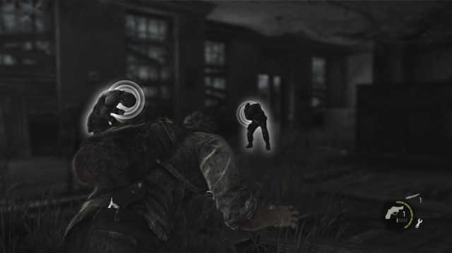
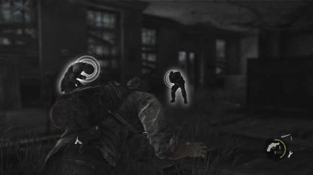

The Last of Us to trzecioosobowa przygodowa gra akcji z elementami survival horroru. Gracz kontroluje przeważnie
Joela, w kilku rozdziałach – Ellie, a w jednym – Sarah. Główny bohater posiada umiejętność pływania, nurkowania i
jazdy konno. Potrafi także walczyć wręcz oraz przy pomocy tępych narzędzi (kij baseballowy, rura i deska) oraz ostrych
(maczeta, siekiera, nóż sprężynowy, ostrze) przedmiotów. Może używać także broni palnej, łuku i miotacza ognia, do
których musi uzupełniać amunicję, lub gaz pełniący funkcję mieszanki zapalającej. Aby odwrócić uwagę lub ogłuszyć
przeciwników może użyć obiektów takich jak pusta butelka, czy cegła. Bohater potrafi skradać się do przeciwników i
udusić ich lub zabić ostrzem.
Posiada także umiejętność nasłuchiwania, która pozwala mu poruszać się bezszelestnie i zlokalizować pobliskich wrogów.

W trakcie rozgrywki musi wspinać się, podsadzać Ellie, lub otwierać drzwi. Bohater wykorzystuje system osłon do ochrony przed ostrzeliwującymi go przeciwnikami. W grze zawarty jest system tworzenia przedmiotów ze znalezionych materiałów. Przedmioty tworzone są w czasie rzeczywistym gry; gdy Joel tworzy przedmiot, musi zdjąć plecak i wyjąć potrzebne mu materiały. Gdy to zrobi, może wytworzyć apteczkę, ostrze, koktajl Mołotowa, bombę dymną, z gwoździami, lub ulepszyć bądź naprawić broń długą do walki wręcz.
Przy pomocy znalezionych suplementów gracz może podwyższyć zdrowie głównego bohatera, nauczyć go szybszego tworzenia przedmiotów, szybszego leczenia, większej celności przy strzelaniu oraz zwiększyć wielkość obszaru nasłuchiwania.
W warsztatach, które można znaleźć podczas podróży, Joel może ulepszać broń palną, lub łuk. Jednak aby to zrobić, musi zużyć znalezione w trakcie wędrówki części.
W produkcji występuje kilka rodzajów przeciwników. Dzielą się oni na ludzi, którzy działają głównie w grupach oraz zainfekowanych grzybem, którzy występują w różnych stadiach zaawansowania choroby (m.in. biegacze, klikacze oraz purchlaki).
Po ukończeniu kampanii dla pojedynczego gracza na poziomie trudności łatwym, normalnym, lub trudnym istnieje możliwość rozpoczęcia kampanii w trybie New Game Plus w, którym zostają zachowane wszelki ulepszenia gracza i broni oraz zdobyte przedmioty. Zostaje odblokowany także tryb Survivor, który cechuje się m.in. dwukrotnym zwiększeniem życia przeciwników i obrażeń, które zadają postaci gracza, brakiem trybu nasłuchiwania, zmniejszeniem liczby amunicji, przedmiotów, suplementów i części możliwych do znalezienia w trakcie gry oraz wyłączeniem wskazówek w trakcie skradania i walki wręcz. Wraz z ostatnim rozszerzeniem wprowadzono jeszcze trudniejszy tryb nazwany Grounded
Posiada także umiejętność nasłuchiwania, która pozwala mu poruszać się bezszelestnie i zlokalizować pobliskich wrogów.

W trakcie rozgrywki musi wspinać się, podsadzać Ellie, lub otwierać drzwi. Bohater wykorzystuje system osłon do ochrony przed ostrzeliwującymi go przeciwnikami. W grze zawarty jest system tworzenia przedmiotów ze znalezionych materiałów. Przedmioty tworzone są w czasie rzeczywistym gry; gdy Joel tworzy przedmiot, musi zdjąć plecak i wyjąć potrzebne mu materiały. Gdy to zrobi, może wytworzyć apteczkę, ostrze, koktajl Mołotowa, bombę dymną, z gwoździami, lub ulepszyć bądź naprawić broń długą do walki wręcz.
Przy pomocy znalezionych suplementów gracz może podwyższyć zdrowie głównego bohatera, nauczyć go szybszego tworzenia przedmiotów, szybszego leczenia, większej celności przy strzelaniu oraz zwiększyć wielkość obszaru nasłuchiwania.
W warsztatach, które można znaleźć podczas podróży, Joel może ulepszać broń palną, lub łuk. Jednak aby to zrobić, musi zużyć znalezione w trakcie wędrówki części.
W produkcji występuje kilka rodzajów przeciwników. Dzielą się oni na ludzi, którzy działają głównie w grupach oraz zainfekowanych grzybem, którzy występują w różnych stadiach zaawansowania choroby (m.in. biegacze, klikacze oraz purchlaki).
Po ukończeniu kampanii dla pojedynczego gracza na poziomie trudności łatwym, normalnym, lub trudnym istnieje możliwość rozpoczęcia kampanii w trybie New Game Plus w, którym zostają zachowane wszelki ulepszenia gracza i broni oraz zdobyte przedmioty. Zostaje odblokowany także tryb Survivor, który cechuje się m.in. dwukrotnym zwiększeniem życia przeciwników i obrażeń, które zadają postaci gracza, brakiem trybu nasłuchiwania, zmniejszeniem liczby amunicji, przedmiotów, suplementów i części możliwych do znalezienia w trakcie gry oraz wyłączeniem wskazówek w trakcie skradania i walki wręcz. Wraz z ostatnim rozszerzeniem wprowadzono jeszcze trudniejszy tryb nazwany Grounded
Ja to tam przeszedłem tę grę ponad 7 razy z czego 2 razy na łatwym, 2 na normalnym i reszta na przetrwaniu
(oczywiście wtedy to grałem na ps3). Teraz jak już dostałem ps4 pro na święta z Pierwszą częścią tej kochanej gry,
to od razu co zrobiłem po włączeniu The Last of Us to wybranie poziomu trudności: Grounded (Na ps3 nie mogłem tego
wybrać bo zawsze jakieś błędy mi wyskakiwały). Według mnie różnicy między The Last of Us na ps3 a ps4 pro nie
widać praktycznie w ogóle pomijając 60 fps na ps4, a 30 fps na ps3 oraz tryb fotograficzny na ps4 (z którego teraz
korzystam co chwilę)